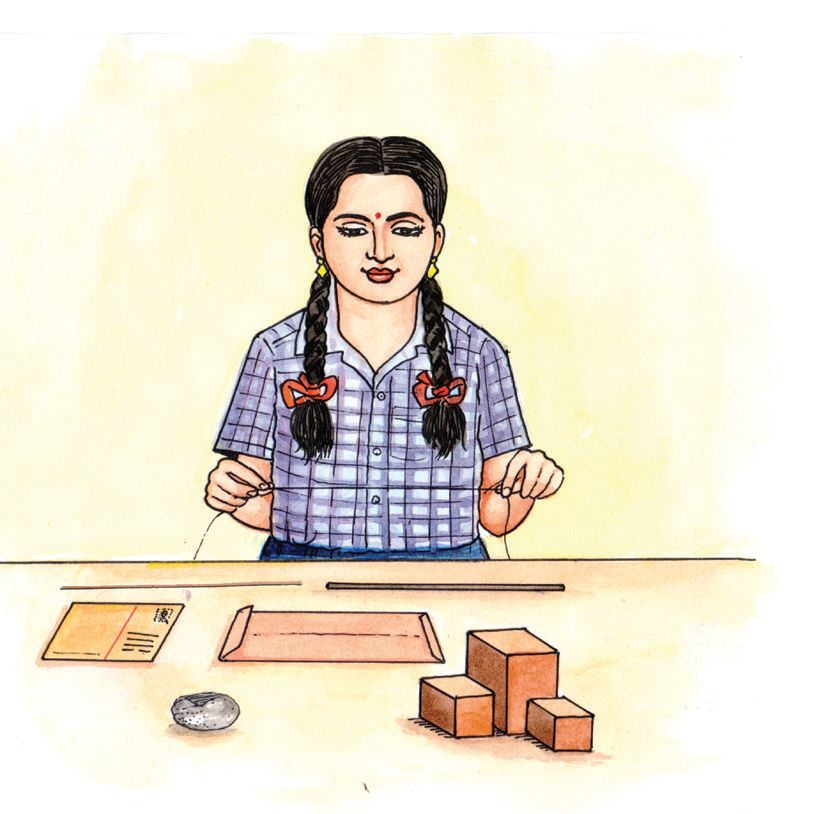
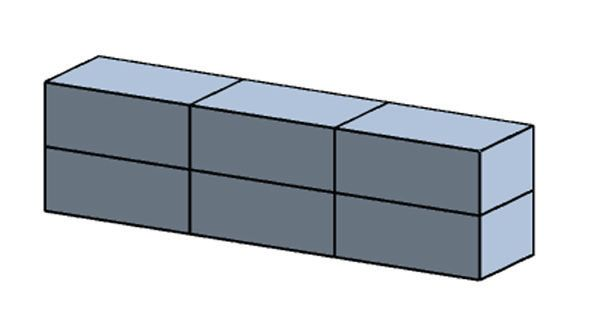
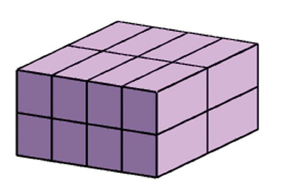
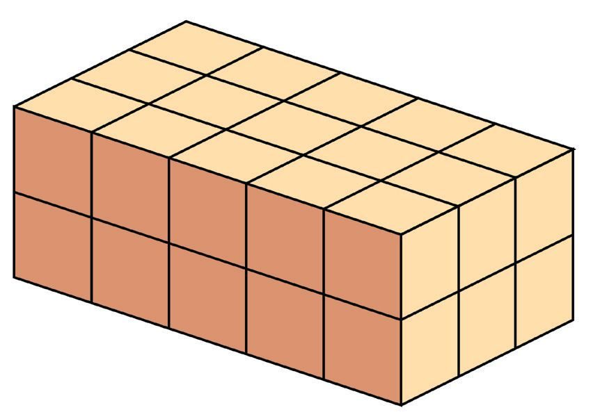
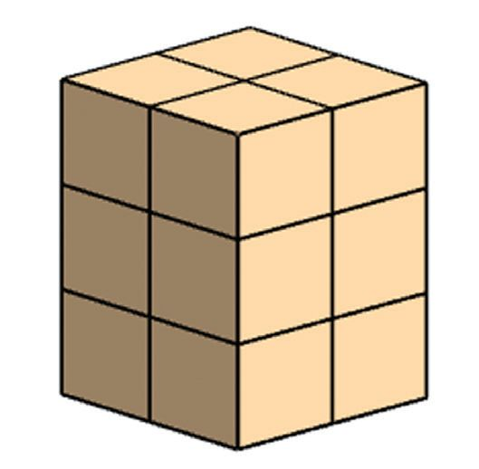
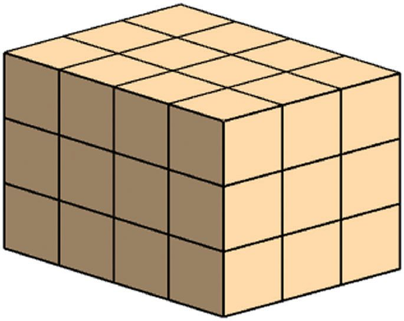
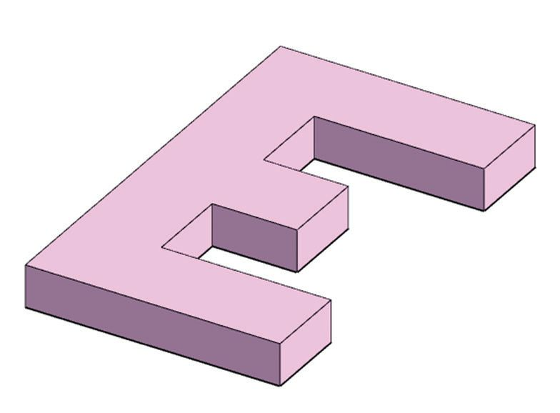

വ്യാാപ്തം
3
വ്യാാപ്തം
വലുതും ചെറുതും ആതിര കുറെ വസ്തുക്കൾ ശേഖരിച്ച് കൂട്ടങ്ങളാക്കി വച്ചിട്ടുണ്ട്.
ആദ്യയത്തെ കൂട്ടം നോോക്കൂ.
ഈ കൂട്ടത്തിൽ വലുതേതാണ് ? എങ്ങനെയാണ് കണ്ടുപിടിച്ചത് ? രണ്ടാമത്തെ കൂട്ടത്തിലെ വസ്തുക്കൾ നോോക്കൂ.
33




വ്യാാപ്തം
3
വ്യാാപ്തം
വലുതും ചെറുതും ആതിര കുറെ വസ്തുക്കൾ ശേഖരിച്ച് കൂട്ടങ്ങളാക്കി വച്ചിട്ടുണ്ട്.
ആദ്യയത്തെ കൂട്ടം നോോക്കൂ.
ഈ കൂട്ടത്തിൽ വലുതേതാണ് ? എങ്ങനെയാണ് കണ്ടുപിടിച്ചത് ? രണ്ടാമത്തെ കൂട്ടത്തിലെ വസ്തുക്കൾ നോോക്കൂ.
33


സ്റ്റാൻഡേർഡ് VI ഗണിതം
ഇവയിൽ വലുതേതാണെന്ന് എങ്ങനെ കണ്ടുപിടിക്കും ? രണ്ട് കമ്പുകളിൽ വലുത് കണ്ടുപിടിക്കാൻ നീളം അളന്നാൽ മതി. രണ്ട് ചതുരങ്ങളിലോോ ? പരപ്പളവ് കണക്കാക്കണ്ടേ ?
ചതുരക്കട്ടകൾ ആതിരയുടെ ശേഖരത്തിലെ രണ്ടു മരക്കട്ടകൾ നോോക്കൂ. ഇവയിൽ വലുതേതാണ് ?
എങ്ങനെയാണ് തീരുമാനിച്ചത് ? ഇനി ഈ കട്ടകൾ നോോക്കൂ. ഇവയിൽ ഏതാണ് വലുത് ?
അത് തീരുമാനിക്കുന്നത് എങ്ങനെയെന്ന് നോോക്കാം.
34





വ്യാാപ്തം
ചതുരക്കട്ടയുടെ വലുപ്പം ഈ ചതുരക്കട്ടകൾ നോോക്കൂ.
ഒരുപോോലെയുള്ള ചെറിയ കട്ടകൾ അടുക്കിയാണ് ഇവ യെല്ലാം ഉണ്ടാക്കിയിരിക്കുന്നത്. ഇവയിൽ ഏതാണ് വലുത് ? ഓരോോന്നിലും എത്ര ചെറിയ കട്ടകളുണ്ടെന്ന് നോോക്കിയാൽ പോോരേ ? ഇതുപോോലെ ചുവടെ കൊൊടുത്തിരിക്കുന്ന ഓരോോന്നിലും എത്ര ചെറിയ കട്ടകളുണ്ടെന്ന് കണക്കാക്കാമോോ ? ചെറിയ കട്ടകളെല്ലാം എണ്ണി നോോക്കാതെ ഓരോോന്നിലും എത്രയുണ്ടെന്ന് പറയാൻ എളുപ്പവഴിയുണ്ടോോ ?
ഈ സമചതുരക്കട്ടയിൽ ആകെ എത്ര ചെറിയ സമചതുര കട്ടകൾ ഉണ്ട് ? ഇതിന്റെ എല്ലാ മൂലയിൽ നിന്നും ഓരോോ കട്ട വീതം മാറ്റിയാൽ ബാക്കി എത്ര കട്ടകളുണ്ടായിരിക്കും ?
ഇവയിൽ ഏറ്റവും വലുതേതാണ് ? ഏറ്റവും ചെറുതോോ ?
35


സ്റ്റാൻഡേർഡ് VI ഗണിതം
ഈ ചതുരക്കട്ടകൾ നോോക്കൂ.
ഓരോോ ചതുരക്കട്ടയിലും എത്ര ചെറിയ കട്ടകൾ ഉണ്ട് ? ഈ രണ്ട് ചതുരക്കട്ടകളുടെയും വലുപ്പം തുല്യയമാണോോ ? എണ്ണം നോോക്കി വലുപ്പം പറയണമെങ്കിൽ രണ്ടിലെയും ചെറിയ കട്ടകൾ എങ്ങനെയുള്ളതായിരിക്കണം ?
വലുപ്പത്തിന്റെ സംഖ്യയ ഈ ചിത്രം നോോക്കൂ.
ഈ ചതുരത്തിൻ്റെ പരപ്പളവ് എന്താണ് ? വശങ്ങളുടെ നീളം ഒരു സെൻ്റിമീറ്ററായ എത്ര ചെറിയ ചതുരങ്ങൾ ചേർന്നതാണിത് ? 4 × 3 = 12
വശങ്ങളുടെ നീളം 1 സെൻ്റിമീറ്ററായ സമചതുരത്തിന്റെ പരപ്പളവ് 1 ചതുരശ്രസെൻ്റിമീറ്റർ; മൊൊത്തം ചതുരത്തി ന്റെ പരപ്പളവ് 12 ചതുരശ്രസെന്റിമീറ്റർ.
36
ഈ സമചതുരക്കട്ടയുടെ എല്ലാ വശവും പെയിന്റടിക്കുന്നു. ഒരു വശത്തും പെയിന്റടിക്കാത്ത എത്ര ചെറിയ സമചതുരക്കട്ടകൾ ഇതിൽ ഉണ്ടാകും ?






വ്യാാപ്തം
ഇനി ഈ ചതുരക്കട്ട നോോക്കൂ.
വശങ്ങളുടെയെല്ലാം നീളം ഒരു സെൻ്റിമീറ്ററായ സമചതുരക്കട്ടകൾ അടുക്കിയാണ് ഇതുണ്ടാക്കിയിരിക്കുന്നത്. എത്രയെണ്ണം ? അപ്പോോൾ ഈ വലിയ കട്ടയുടെ വലുപ്പം, 30 ചെറിയ കട്ടകളുടെ വലു പ്പമാണ്. ഇങ്ങനെ അളക്കുന്ന വലുപ്പത്തിന് വ്യാാപ്തം (Volume) എന്നാണ് കണക്കിലെ പേര്. വശങ്ങളുടെ നീളം 1 സെൻ്റിമീറ്ററായ സമചതുരക്കട്ടയുടെ വ്യാപ്തം 1 ഘനസെൻ്റിമീറ്റർ (Cubic centimetre) എന്നാണ് പറയുന്നത്. ഇത്തരം 30 സമചതുരക്കട്ടകൾ ചേർന്നതാണ് ചിത്രത്തിലെ വലിയ കട്ട, ഇതിന്റെ വ്യാപ്തം 30 ഘനസെൻ്റിമീറ്റർ.
വശങ്ങളുടെ നീളം ഒരു സെന്റിമീറ്ററായ സമചതുരക്കട്ടകൾ ചേർത്തുണ്ടാക്കിയ കുറെ ചതുരക്കട്ടകളുടെ ചിത്രങ്ങളാണ് തന്നിരിക്കുന്നത്. ഓരോോന്നിൻ്റെയും വ്യാപ്തം കണക്കാക്കുക.
37



സ്റ്റാൻഡേർഡ് VI ഗണിതം
വ്യാാപ്തക്കണക്ക് ഈ ചതുരക്കട്ട നോോക്കൂ.
1 സെമീ
5 സെമീ
ീ
ീ
3 സെമീ
ഇതിന്റെ വ്യാപ്തം കണക്കാക്കണം. അതിന്, നീളവും വീതിയും ഉയരവും 1 സെൻ്റിമീറ്ററായ എത്ര സമചതുരക്കട്ടകൾ ചേർത്ത് വച്ചാണ് ഈ കട്ട ഉണ്ടാക്കാൻ കഴിയുന്നതെന്ന് കണക്കാക്കണം.
1 സെമീ
5 സെമീ
ീ
38
ീ
3 സെമീ


വ്യാാപ്തം
അപ്പോോൾ ഇതിന്റെ വ്യാപ്തം 15 ഘനസെന്റിമീറ്റർ. ഇനി ഈ കട്ടയുടെ വ്യാപ്തമോോ ?
2 സെമീ
5 സെമീ
ീ
ീ
3 സെമീ
ആദ്യംം കണ്ട രണ്ട് കട്ടകൾ ഒന്നിനുമേൽ ഒന്നായി ചേർത്തുവച്ചാൽ ഇത് കിട്ടുമല്ലോോ.
1 സെമീ 1 സെമീ
5 സെമീ
ീ
ീ
3 സെമീ
അപ്പോോൾ ഇതുണ്ടാക്കാൻ 1 സെന്റിമീറ്റർ നീളവും വീതിയും ഉയരവുമുള്ള എത്ര കട്ടകൾ വേണം ?
അതായത്, ഈ ചതുരക്കട്ടയുടെ വ്യാപ്തം 30 ഘനസെന്റിമീറ്റർ.
39


സ്റ്റാൻഡേർഡ് VI ഗണിതം
1 സെമീ
3 സെമീ
ഇതുപോോലെ ചുവടെയുള്ള കട്ടകളുടെ വ്യാപ്തം കണക്കാക്കി ഓരോോന്നിന്റെയും താഴെ എഴുതുക.
7 സെമീ
ീ
4 സെമീ
6 സെമീ
ീ
ീ
3 സെമീ
5 സെമീ
5 സെമീ
ീ
5 സെമീ
ീ
ീ
5 സെമീ
5 സെമീ
ീ
ീ
4 സെമീ
ചതുരക്കട്ടയുടെ വ്യാപ്തം കണക്കാക്കുന്നത് എങ്ങനെയെന്ന് മനസ്സിലായില്ലേ ? ചതുരക്കട്ടയുടെ വ്യാാപ്തം, അതിൻ്റെ നീളം, വീതി, ഉയരം എന്നിവയുടെ ഗുണനഫലമാണ്.
(1) ഒരു ഇഷ്ടികയ്ക്ക് 21 സെൻ്റിമീറ്റർ നീളവും 15 സെന്റിമീറ്റർ വീതിയും 7 സെൻ്റിമീറ്റർ ഉയര
വുമുണ്ട്. ഇതിന്റെ വ്യാപ്തം എത്രയാണ് ? (2) ഇരുമ്പുകൊൊണ്ടുണ്ടാക്കിയ ഒരു സമചതുരക്കട്ടയുടെ ഒരു വശത്തിന്റെ നീളം 8 സെന്റി
മീറ്റർ ആണ്. ഇതിൻ്റെ വ്യാപ്തം എത്രയാണ് ? ഒരു ഘനസെൻ്റിമീറ്റർ ഇരുമ്പിൻ്റെ ഭാരം 8 ഗ്രാം ആണ്. ഈ കട്ടയുടെ ഭാരം എത്രയാണ് ?
40


വ്യാാപ്തം
വ്യാാപ്തവും നീളവും
പരപ്പും വ്യാാപ്തവും
ഒരു മരക്കട്ടയ്ക്ക് 9 സെൻ്റിമീറ്റർ നീളവും 4 സെൻ്റിമീറ്റർ വീതിയുമു 8 സെന്റിമീറ്റർ നീളവും, 2 സെന്റി ണ്ട്. ഇതിൻ്റെ വ്യാപ്തം 180 ഘനസെൻ്റിമീറ്റർ. ഉയരമെത്രയാണ് ? മീറ്റർ വീതിയുമുള്ള ചതുരത്തി നീളവും വീതിയും ഉയരവും ഗുണിച്ചതാണല്ലോോ വ്യാപ്തം. ന്റെ പരപ്പളവ് എന്താണ്? അപ്പോോൾ ഈ കണക്കിൽ 9 ഉം 4 ഉം ഗുണിച്ചതിനെ ഉയരം 8 സെന്റിമീറ്റർ നീളവും 2 സെന്റി കൊൊണ്ട് ഗുണിച്ചതാണ് 180. മീറ്റർ വീതിയും 1 സെന്റിമീറ്റർ അതായത്, ഉയരത്തെ 36 കൊൊണ്ട് ഗുണിച്ചാൽ 180 കിട്ടുംം. ഉയരവുമുള്ള ചതുരക്കട്ടയുടെ അപ്പോോൾ ഉയരം കണക്കാക്കാൻ 180 നെ 36 കൊൊണ്ട് ഹരിച്ചാൽ വ്യാപ്തമോോ ? മതി. ഏതാനും ചതുരക്കട്ടകളുടെ അളവുകളാണ് പട്ടികയിൽ കൊൊടുത്തിരിക്കുന്നത്. എഴുതിയിട്ടില്ലാത്ത അളവുകൾ കണക്കാക്കുക.
3
നീളം 3 സെമീ 6 സെമീ 6 സെമീ
വീതി 8 സെമീ 4 സെമീ 4 സെമീ
ഉയരം 7 സെമീ 5 സെമീ ... സെമീ
വ്യാാപ്തം ... ഘസെമീ ... ഘസെമീ 48 ഘസെമീ
4
8 സെമീ
... സെമീ
2 സെമീ
48 ഘസെമീ
5
... സെമീ
2 സെമീ
2 സെമീ
48 ഘസെമീ
6
... സെമീ
2 സെമീ
4 സെമീ
80 ഘസെമീ
7
14 സെമീ
... സെമീ
5 സെമീ
210 ഘസെമീ
1 2
പുതിയ രൂപങ്ങൾ സമചതുരക്കട്ടകൾ അടുക്കി ചതുരക്കട്ടകളല്ലാത്ത രൂപങ്ങളുംം ഉണ്ടാക്കാമല്ലോോ. ഉദാഹരണമായി ഈ ചിത്രം നോോക്കൂ.
വശങ്ങളുടെ നീളം 1 സെൻ്റിമീറ്ററായ സമചതുരക്കട്ടകൾ അടുക്കിവച്ചാണ് ഈ രൂപം നിർമ്മിച്ചി രിക്കുന്നത്. ഇതിൻ്റെ വ്യാപ്തം കണക്കാക്കാമോോ ?
41



സ്റ്റാൻഡേർഡ് VI ഗണിതം
ഏറ്റവും ചുവട്ടിൽ എത്ര സമചതുരക്കട്ടകളുണ്ട് ? തൊൊട്ടു മുകളിലെ പടിയിലോോ ? ഓരോോ പടിയിലെയും സമചതുരക്കട്ടകളുടെ എണ്ണം കണക്കാക്കാമല്ലോോ. ആകെ എത്ര സമചതുരക്കട്ടകൾ ? പടിക്കെട്ടിന്റെ വ്യാപ്തം എത്രയാണ് ? 4 സെന്റിമീറ്റർ നീളവും 3 സെന്റിമീറ്റർ വീതിയും ഇനി ഈ ചിത്രം നോോക്കു. 1 സെന്റിമീറ്റർ
ഉയരവുമുള്ള ഒരു ചതുരക്കട്ടയുടെ വ്യാപ്തം എത്രയാണ് ? ഇതിന്റെ നീളവും വീതിയും ഉയരവും ഇരട്ടിച്ചാൽ വ്യാപ്തം എത്ര മടങ്ങാകും ?
സമചതുരാകൃതിയിലുള്ള മരപ്പലകകൾ അടുക്കിവച്ചാണ് ഈ രൂപം നിർമ്മിച്ചിരിക്കുന്നത്. ഏറ്റവും ചുവടെയുള്ള പലകയുടെ ഒരു വശത്തിന്റെ നീളം 9 സെന്റിമീറ്ററാണ്. മുകളിലേക്കു വരുന്തോോറുംം പലകകളുടെ വശത്തിന്റെ നീളം 2 സെന്റിമീറ്റർ വീതം കുറയുന്നു. എല്ലാ പലകക ളുടെയും ഉയരം 1 സെന്റിമീറ്ററാണ്. ഈ രൂപത്തിൻ്റെ വ്യാപ്തം കണ്ടുപിടിക്കാമോോ ? ഓരോോ പലകയുടെയും വ്യാപ്തം കണക്കാക്കി കൂട്ടിയാൽ മതിയല്ലോോ ? ചെയ്തുനോോക്കൂ.
ചുവടെ കൊൊടുത്തിരിക്കുന്ന രൂപങ്ങളുടെ വ്യാപ്തം കണക്കാക്കുക. എല്ലാ അളവുക ളുംം സെന്റിമീറ്ററിലാണ്. 12
4
20 4
4
8
12
16 4
6
2
6
4 11 3 4
42
3
6
4
8
6
4
3 4


വ്യാാപ്തം
വലിയ അളവുകൾ നീളവും വീതിയും ഉയരവും 1 മീറ്ററായ ഒരു സമചതുരക്കട്ടയുടെ വ്യാപ്തം എത്ര ഘനസെന്റിമീറ്ററാണ് ? 1 മീറ്റർ എന്നാൽ 100 സെന്റിമീറ്റർ.
അപ്പോോൾ നീളവും വീതിയും ഉയരവും 100 സെൻ്റിമീറ്ററായ സമചതുരക്കട്ടയുടെ വ്യാപ്തമാണ് കണക്കാക്കേണ്ടത്. അതെത്രയാണ് ? ഒരു മീറ്റർ നീളവും ഒരു മീറ്റർ വീതിയും ഒരു മീറ്റർ ഉയരവുമുള്ള ഒരു സമചതുരക്കട്ടയുടെ വ്യാപ്തമാണ് ഒരു ഘനമീറ്റർ (Cubic metre). അപ്പോോൾ, 1 ഘനമീറ്റർ = 1000000 ഘനസെന്റിമീറ്ററാണ്.
വലിയ വസ്തുക്കളുടെ വ്യാപ്തം പറയുന്നത് ഘനമീറ്റർ ഉപയോോഗിച്ചാണ്.
(1) ഒരു ലോോറിയിൽ 4 മീറ്റർ നീളത്തിലും 2 മീറ്റർ വീതിയിലും 1 മീറ്റർ ഉയരത്തിലും മണൽ
നിറച്ചിട്ടുണ്ട്. 1 ഘനമീറ്റർ മണലിന് 1000 രൂപയാണ് വില. ഈ മണലിന്റെ വില എത്രയാണ് ? (2) 6 മീറ്റർ നീളവും 1 മീറ്റർ വീതിയും 50 സെൻ്റിമീറ്റർ ഉയരവുമുള്ള ഒരു തറയുടെ വ്യാപ്തം
എത്ര ഘനസെൻ്റിമീറ്ററാണ് ? (3) 5 മീറ്റർ നീളവും 1 മീറ്റർ വീതിയും 25 സെൻ്റിമീറ്റർ ഉയരവുമുള്ള ഒരു മരക്കഷണത്തിൻ്റെ
വ്യാപ്തം എത്രയാണ് ? 1 ഘനമീറ്റർ മരത്തിന് 60000 രൂപയാണ് വില. ഈ മരക്കട്ട വാങ്ങാൻ എത്ര രൂപ വേണം ?
ഉള്ളളവ് ഈ പെട്ടി നോോക്കൂ. കട്ടിയുള്ള ചതുരപ്പലകകൾ ചേർത്തുവച്ചാണ് ഇതുണ്ടാക്കി യിരിക്കുന്നത്. പലകയുടെ കട്ടി കാരണം ഇതിൻ്റെ അകത്തെ നീളവും വീതിയും ഉയരവുമെല്ലാം പുറത്തെ അളവുകളെ ക്കാൾ കുറവാണ്. അകത്തെ നീളം 40 സെൻ്റിമീറ്ററുംം വീതി 20 സെൻ്റിമീറ്ററുംം ഉയരം 10 സെന്റിമീറ്ററുംം.
43


സ്റ്റാൻഡേർഡ് VI ഗണിതം
അപ്പോോൾ ഈ നീളവും വീതിയും ഉയരവുമുള്ള ഒരു ചതുരക്കട്ട കൃത്യയമായി നിറഞ്ഞിരിക്കാനുള്ള സ്ഥലമാണ് ഈ പെട്ടിക്കുള്ളിൽ ഉള്ളത്. ഈ ചതുരക്കട്ടയുടെ വ്യാപ്തവും പെട്ടിയുടെ ഉള്ളിലെ വ്യാപ്തവും തുല്യയമാണ്. ഈ വ്യാപ്തത്തെ പെട്ടിയുടെ ഉള്ളളവ് (Capacity) എന്നാണ് പറയുന്നത്. അതായത്, പെട്ടിയുടെ ഉള്ളളവ് = 40 × 20 × 10 = 8000 ഘനസെൻ്റിമീറ്റർ. അപ്പോോൾ അകത്തെ നീളം 50 സെൻ്റിമീറ്ററുംം വീതി 25 സെന്റി മീറ്ററുംം ഉയരം 20 സെൻ്റിമീറ്ററുംം ആയ പെട്ടിയുടെ ഉള്ളളവ് എത്ര യാണ് ?
ദ്രാവകങ്ങളുടെ അളവ്
ലിറ്ററുംം ഘനമീറ്ററുംം ഒരു ലിറ്ററെന്നാൽ
1000 ഘനസെന്റിമീറ്റർ.
ഒരു ഘനമീറ്ററെന്നാൽ
അകത്തെ നീളവും വീതിയും ഉയരവുമെല്ലാം 10 സെന്റിമീറ്ററായ ഒരു സമചതുരപ്പാത്രത്തിന്റെ ഉള്ളളവ് എത്രയാണ് ?
1000000 ഘനസെന്റിമീറ്റർ.
അപ്പോോൾ 1 ഘനമീറ്റർ = 1000 ലിറ്റർ.
10 × 10 × 10 = 1000 ഘനസെൻ്റിമീറ്റർ.
ഈ പാത്രത്തിൽ കൊൊള്ളുന്ന ദ്രാവകത്തിൻ്റെ അളവാണ് 1 ലിറ്റർ. അതായത്, 1 ലിറ്റർ = 1000 ഘനസെന്റിമീറ്റർ
ഇത് മറ്റൊൊരു രീതിയിൽ പറയാം. നിറയെ വെള്ളമുള്ള ഒരു പാത്രത്തിൽ 10 സെന്റിമീറ്റർ വശങ്ങളുള്ള ഒരു സമചതുര ക്കട്ട പൂർണ്ണമായും താഴ്ത്തിയാൽ പുറത്തേക്കൊൊഴുകുന്ന വെള്ളത്തിൻ്റെ അളവാണ് 1 ലിറ്റർ. അപ്പോോൾ നീളം 20 സെൻ്റിമീറ്ററുംം വീതി 15 സെന്റിമീറ്ററുംം ഉയരം 10 സെൻ്റിമീറ്ററുംം ആയ ഒരു പാത്രത്തിൽ എത്ര ലിറ്റർ വെള്ളം കൊൊള്ളും ? മറ്റൊൊരു കണക്ക് നോോക്കാം: ചതുരപ്പെട്ടിയുടെ ആകൃതിയിലുള്ള ഒരു ജലസംഭര ണിക്ക് 4 മീറ്റർ നീളവും 2 12 മീറ്റർ ഉയരവും ഉണ്ട്. ഇതിൽ 15000 ലിറ്റർ വെള്ളം കൊൊള്ളും. ജലസംഭര ണിയുടെ വീതി എത്രയാണ് ? നീളവും വീതിയും ഉയരവുമെല്ലാം മീറ്ററായി എടുത്ത് ഗുണിച്ചാൽ, ഉള്ളളവ് എത്ര ഘനമീറ്ററാണെന്ന് കിട്ടുംം.
44
വെളളത്തിലിട്ടാൽ ഒരു പാത്രത്തിൽ നിറയെ വെള്ളം ഉണ്ട്. അതിൽ ഒരു സെന്റിമീറ്റർ വശമുള്ള ഒരു സമചതുരക്കട്ട യിട്ടാൽ എത്ര ഘനസെന്റിമീറ്റർ വെള്ളം പുറത്തേക്കൊൊഴുകും ? ഇത്തരം 20 കട്ടകൾ വെള്ളത്തിലിട്ടാലോോ ?


വ്യാാപ്തം
ഇവിടെ ഉള്ളളവ് 15000 ലിറ്റർ എന്നാണ് പറഞ്ഞിരിക്കുന്നത്.
എത്ര കൂടുംം ?
ഒരു നീന്തൽക്കുളത്തിന് 25 മീറ്റർ നീളവും 10 മീറ്റർ വീതിയും 2 മീറ്റർ ആഴ 1 വുമുണ്ട്. ഇതിൽ പകുതി ഉയരത്തിൽ നീളവും ഉയരവും ഗുണിച്ചാൽ 4 × 2 2 = 10 എന്നുകിട്ടുംം. വെള്ളം നിറയ്ക്കാൻ എത്ര ലിറ്റർ വെള്ളം വേണം ? അപ്പോോൾ വീതിയെ 10 കൊൊണ്ട് ഗുണിച്ചാൽ 15. 25 × 10 × 1 = 250 ഘനമീറ്റർ = 250000 ഇതിൽ നിന്ന് വീതി കണക്കാക്കാൻ 15 നെ 10 കൊൊണ്ട് ഹരി ലിറ്റർ. ഇനി ഈ കുളത്തിൽ 1 സെന്റി മീറ്റർ ഉയരത്തിൽ വെള്ളം കൂടിയാൽ ച്ചാൽ മതി. എത്ര ലിറ്റർ വെള്ളം കൂടുംം ? 15 1
അതായത്, 15 ഘനമീറ്റർ.
വീതി = 10 = 1 2 മീറ്റർ എന്ന് കാണാമല്ലോോ.
ഇനി ഈ സംഭരണിയിൽ 6000 ലിറ്റർ വെള്ളം ഉണ്ടെന്ന് കരുതുക. എത്ര ഉയരത്തിലാണ് വെള്ളമുള്ളത് ? 6 ഘനമീറ്റർ വെള്ളമാണല്ലോോ ഉള്ളത്. അപ്പോോൾ സംഭരണിയുടെ നീളവും വീതിയും വെള്ള
ത്തിൻ്റെ ഉയരവും മീറ്ററായി എടുത്ത് ഗുണിച്ചാൽ 6 കിട്ടുംം. നീളവും വീതിയും ഗുണിച്ചാൽ 4 × 1 12 = 6 അപ്പോോൾ ഉയരം 6 ÷ 6 = 1 മീറ്റർ.
(1) ഒരു സമചതുരപ്പെട്ടിയുടെ അകത്തെ നീളവും വീതിയും ഉയരവും 4 സെൻ്റിമീറ്റർ
വീതമാണ്. പെട്ടിയുടെ ഉള്ളളവ് എത്രയാണ് ? ഈ പെട്ടിയിൽ 2 സെൻ്റിമീറ്റർ വീതം വശമുള്ള എത്ര സമചതുരക്കട്ടകൾ അടുക്കിവയ്ക്കാം ? (2) ചതുരപ്പെട്ടിയുടെ ആകൃതിയിലുള്ള ഒരു ടാങ്കിൻ്റെ അകത്തെ അളവുകൾ 70 സെന്റി
മീറ്റർ, 80 സെന്റിമീറ്റർ, 90 സെന്റിമീറ്റർ വീതമാണ്. ഇതിൽ എത്ര ലിറ്റർ വെള്ളം കൊൊള്ളും? (3) ഒരു ചതുരപ്പാത്രത്തിന് 90 സെന്റിമീറ്റർ നീളവും 40 സെന്റിമീറ്റർ വീതിയും ഉണ്ട്. ഇതിൽ 180 ലിറ്റർ വെള്ളം ഉണ്ട്. എത്ര ഉയരത്തിലാണ് വെള്ളമുള്ളത് ? (4) അകത്തെ നീളം 80 സെൻ്റിമീറ്ററുംം വീതി 60 സെന്റിമീറ്ററുംം ഉയരം 50 സെന്റിമീറ്ററുമായ
ഒരു പാത്രത്തിൽ 15 സെൻ്റിമീറ്റർ ഉയരത്തിൽ വെള്ളം ഉണ്ട്. ഇത് നിറയാൻ ഇനി എത്ര ലിറ്റർ വെള്ളം കൂടി വേണം ? (5) ചതുരാകൃതിയിലുള്ള ഒരു കുളം നിർമ്മിക്കാൻ പഞ്ചായത്ത് തീരുമാനിച്ചു. കുളത്തിന് 20 മീറ്റർ നീളവും 15 മീറ്റർ വീതിയും 2 മീറ്റർ ആഴവുമാണ് നിശ്ചയിച്ചത്. ഈ കുള
ത്തിൽ 1 12 മീറ്റർ ഉയരത്തിൽ വെള്ളം നിറയാൻ എത്ര ലിറ്റർ വെള്ളം വേണം ?
45

സ്റ്റാൻഡേർഡ് VI ഗണിതം
(6) ഒരു അക്വേേറിയത്തിൻ്റെ ഉൾഭാഗത്തിന് 60 സെൻ്റിമീറ്റർ നീളവും 30 സെന്റിമീറ്റർ വീതി
യുമുണ്ട്. ഇതിൽ പകുതി ഉയരത്തിൽ വെള്ളം ഉണ്ട്. ഇതിലേക്ക് ഒരു കല്ല് താഴ്ത്തിയ പ്പോോൾ വെള്ളം 10 സെന്റിമീറ്റർ കൂടി ഉയർന്നു. കല്ലിൻ്റെ വ്യാപ്തമെത്രയാണ് ? (7) ഇരുമ്പുകൊൊണ്ടുള്ള ഒരു ചതുരക്കട്ടയുടെ നീളം 20 സെന്റിമീറ്ററുംം വീതി 10 സെൻ്റിമീറ്റ
റുംം ഉയരം 5 സെൻ്റിമീറ്ററുമാണ്. ഇത് ഉരുക്കി ഒരു സമചതുരക്കട്ട ഉണ്ടാക്കിയാൽ ഒരു വശത്തിന്റെ നീളം എത്രയായിരിക്കും ? (8) 2 മീറ്റർ നീളവും 1 മീറ്റർ വീതിയും ഉള്ള ഒരു ടാങ്കിൽ 10000 ലിറ്റർ വെള്ളം കൊൊള്ളണ
മെങ്കിൽ അതിൻ്റെ ഉയരം എത്രയായിരിക്കണം ? (9) 12 സെന്റിമീറ്റർ വശമുള്ള സമചതുരാകൃതിയായ ഒരു കടലാസിന്റെ നാല് മൂലകളിൽ
നിന്നും 1 സെൻ്റിമീറ്റർ വശമുള്ള സമചതുരങ്ങൾ മുറിച്ചു മാറ്റുന്നു. ഈ രൂപത്തിൻ്റെ നാലു വശവും 1 സെന്റിമീറ്റർ വീതം ഉയർത്തി മടക്കാമല്ലോോ. ഇങ്ങനെ ഉണ്ടാക്കിയ ചതു രപ്പാത്രത്തിന്റെ ഉള്ളളവ് എത്രയാണ് ? ഓരോോ മൂലയിൽനിന്നും 2 സെന്റിമീറ്റർ മുറിച്ച് മാറ്റി മടക്കിയാണ് പാത്രം ഉണ്ടാക്കുന്നതെങ്കിലോോ ?
46